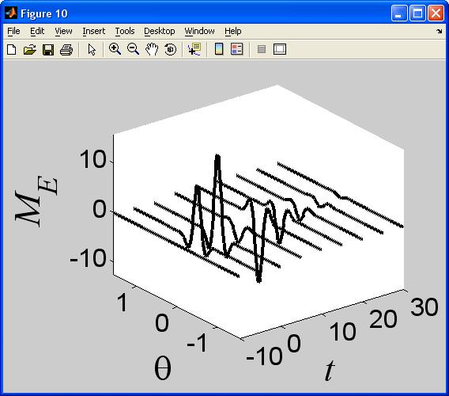

This the readme for models associated with the publication Kovacic G, Tao L, Cai D, Shelley MJ (2008) Theoretical analysis of reverse-time correlation for idealized orientation tuning dynamics. J Comput Neurosci 25:401-38 These model files were supplied by Dr Kovacic. Matlab routines are included that I used to compute the RTC function (Fig. 3, Fig. 8 left), the scaled and superimposed time- slices of the RTC function (Fig. 8 right), and the parameter dependence of the location and size of the maxima and minima associated with the "Mexican hat" shapes. The codes for the maxima and minima are very raw, and unfortunately I don't have the time to rerun them and document them better. I'm also appending some data that I obtained for the paper. Example run: By starting matlab and typing rtcfnpub after cd'ing to the Plot_Tuning_Curve directory results in the figures similar to Fig 3 from the paper: 